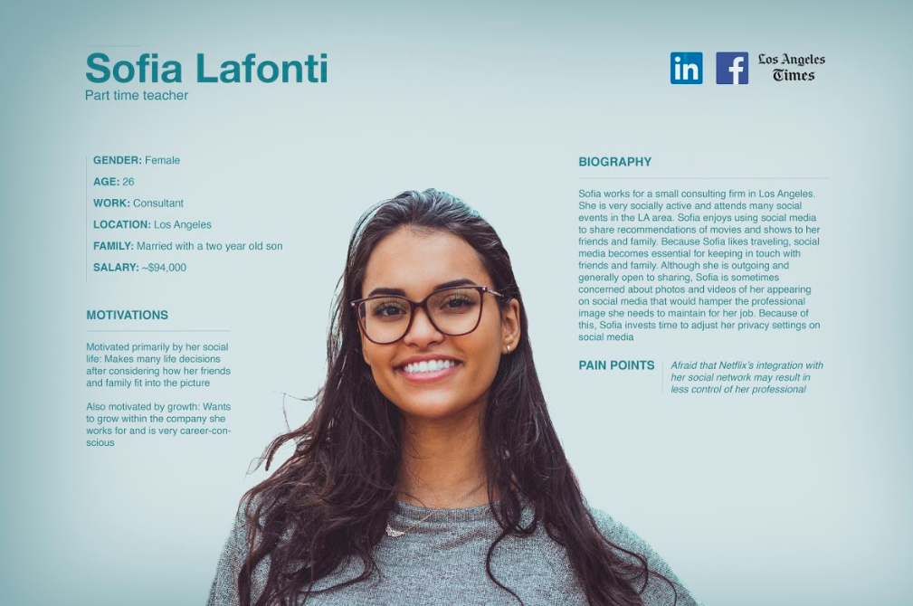

Netflix: A Semester of User Research
The emergence of Netflix and other streaming services has revolutionized the entertainment industry. Audiences now have more control than ever with the ability to watch what they want on demand. As TV guides and the need to fit a show into your schedule are becoming a thing of the past, new questions emerge.
How do Netflix streamers determine what to watch? Is Netflix's recommendation algorithm effective? How does it shape its users viewer preferences? To what extent would social features on Netflix affect what a user decides to watch?
These are some of the questions that guided a semester's worth of research conducting interviews, surveys and usability tests as well as creating personas and scenarios to create hypothetical personalization features.
getting a lay of the land: a competitive analysis
Before conducting research on Netflix users, we needed to get a better idea of who the competitors were in the space. We pinpointed six competitors to create a competitive matrix. The features we compared included content, aesthetics, accessibility, cost, privacy, personalization and social functionality. The competitors we considered were Hulu, Prime Video, YouTube, DirectTV, going to a movie theater and Spotify.
introducing social features: interviews and surveys
After completing our competitive analysis, we began conducting user research in the form of interviews and surveys. Aside from learning more broadly about how users interact with their streaming platform to select content, our research objective was to gain insights into why people would or would not support social functionality on Netflix. Similar to the features found on music streaming services like Spotify or Apple Music, these hypothetical additions would allow users to add friends and receive suggestions based on what their friends have watched. We conducted interviews and created an online survey to learn more about how streamers feel about the new features.
In general, our sample population of entertainment viewers would like to see Netflix add social features onto their platform. We concluded that Netflix can be a socially connected service where streamers can at least follow others for viewing inspiration. Some respondents were in support of adding in a discussion board for users to engage in dialogue — in my personal opinion, this this takes the social features too far and would require extra monitoring for inappropriate behavior and preventing spoilers.
organizing the data: an affinity diagram
With the information gathered from the interviews and survey responses, we created an affinity diagram to consolidate the responses into common themes. Some themes that emerged were privacy concerns, time constraints for quickly finding a new show and the implications of seeing what your friends are watching (i.e. stigma or shame for watching a certain title).
putting our data to action: personas and scenarios
Using the experiences and sentiments expressed in the interviews, the next step was to create personas. Three personas were created. Each had differing needs and preferences regarding privacy and social features.
Note: graphic not created by me
With the personas in mind, we created scenarios for each persona. These were hypothetical instances in which the social features existed and how each persona would interact the features.
Sofia Lafonti
Sofia is on train headed home from her job in downtown Chicago to her studio apartment on the north side. Sofia prefers to do things together with her close friends, so she checks her social media accounts. As a social media consultant, it’s important for her to maintain a professional image for her employer, so she is careful with who she friends on Netflix and has changed some of her privacy settings. She logs on to Facebook to see if there are any events happening near her tonight but does not find anything. Her friends’ Instagram stories also show no indication of any of her friends doing anything fun tonight, so she decides that she will stay in.
Just last week she finished watching Ozark at the recommendation of her best friend. On the train ride, she thinks about what she might begin watching tonight. Ideally, she would watch one of the many new popular shows available on Netflix. Her goal is to always stay up to date with the popular television trends –– she can not let any television show references go over her head, as part of her job is to stay up to date with what is popular. She scrolls down her Twitter’s “TV/Movies” category on the “Search” page to find inspiration. There are several tweets about shows on Netflix and she has a general idea of what shows are trending, but she doesn't know if she can trust the opinion of random people on social media.
Sofia arrives at home with some popular shows in mind but is still uncertain as to which show she should watch. She opens up the Netflix app on her TV and scrolls down to the “What Your Friends Watched” category. If anything, she believes that her close friends –– which she follows on Netflix –– have good taste. Maniac appears on the list and catches her attention. The fact that the show was also on her Twitter feed and at least one of her friends have watched it convinces her to start the series. She is glad that Netflix has added this new social feature and will certainly use it in the future when choosing the next show to watch.
recommendation features: usability testing
After learning more about how users might react to social features on Netflix, we looked more in-depth at how users interact with the recommendation features it currently has in place. Our initial survey asked how viewers typically got recommendations for a new show. The most common response was from a friend either via text or in person. Seeing that users may not be utilizing Netflix's recommendation features, we specifically wanted to learn more about how subscribers found new shows to watch and whether the platform's recommendations were useful to viewers.
To gain these insights, we conducted interviews, in-person and remote usability tests as well as created a preference test using A|B testing. The culmination of our work was a usability test report on Netflix's personalization features. We analyzed the data to conclude that users are not aware of, or do not fully understand, the features and affordances that allow them to personalize their browsing experience. The responses highlighted difficulties specifically using Netflix’s My List recommendation system, % Match feature and Viewing Activity.
The inability to intuitively understand personalization features and how to use them was a common theme throughout our research. Personally, I believe adding social features to aid in the process of selecting content would be useful for viewers who want to find a show they know they can discuss with their friends. Though if the goal is to make the process of finding a new show more efficient, adding another section of content may only slow that down.